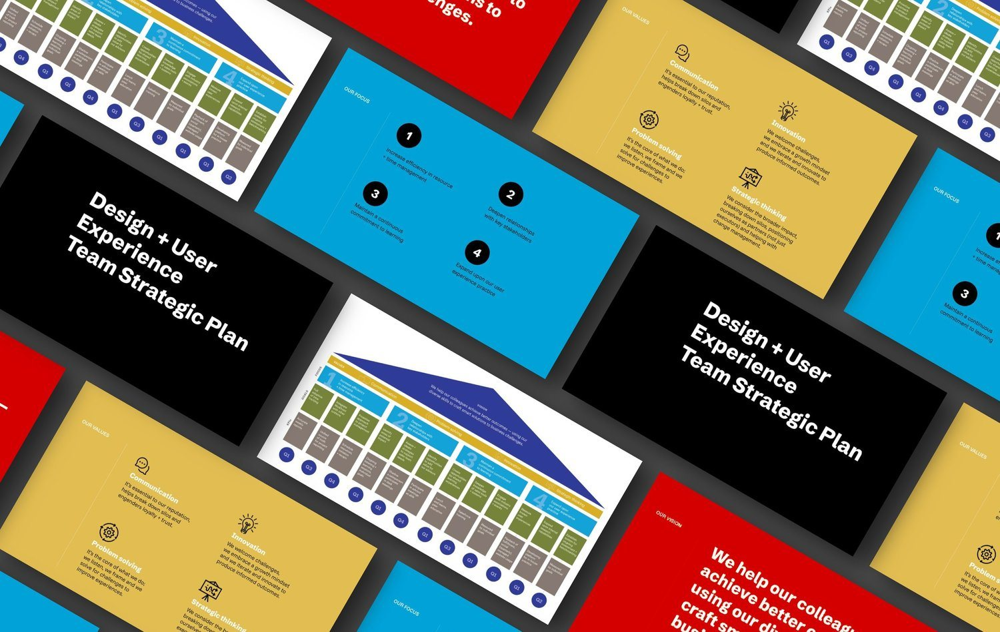
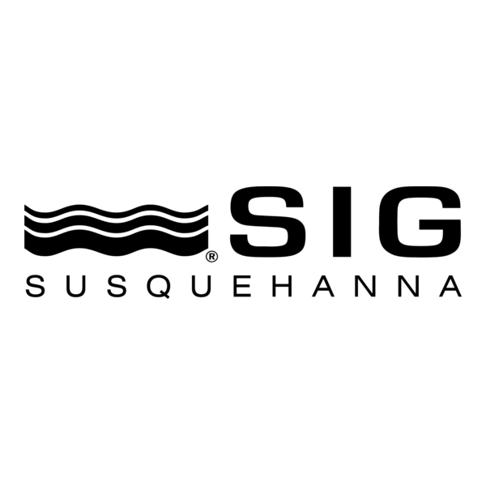
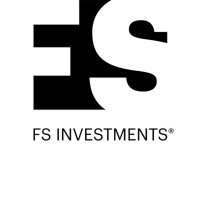
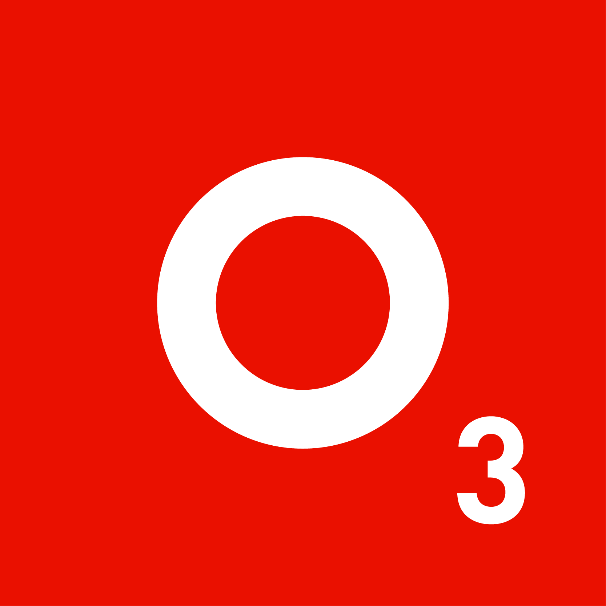

Begin with business needs
Understanding the organization's goals, challenges, and opportunities before designing team structures.
Case study · Design leadership
A leadership journey across three organizations, building, scaling, and rebuilding design teams that deliver measurable business impact.

Background
Throughout my career, I've specialized in building, scaling, and transforming design teams that deliver measurable business impact. My approach combines strategic vision with practical implementation, creating design functions that evolve from service providers to strategic partners. This case study covers my journey across three distinct organizations where I established, grew, and rebuilt design teams to meet evolving business needs.
My team-building philosophy
Understanding the organization's goals, challenges, and opportunities before designing team structures.
Developing skills matrices, process documentation, and leadership playbooks that provide structure and clarity.
Building internal capabilities while optimizing external partnerships for maximum value.
Positioning design as a strategic business driver, not just a service function.
The journey

When I joined SIG (Susquehanna International Group) as their first creative leader, the organization relied entirely on external agencies for design work, resulting in inconsistent quality, high costs, and limited strategic alignment.
No existing in-house design capabilities, heavy dependence on external agencies ($300K+ annual spend), fragmented brand expression across touchpoints, and limited design influence in business decision-making.
I began with a comprehensive audit of design needs across the organization, mapping them against business priorities. This surfaced the highest-impact areas where in-house capabilities would deliver the most value. Rather than replacing all agency work immediately, I developed a phased approach to building the team.

Building on my experience at SIG, I joined FS Investments as their first creative lead. The organization had significant potential for design impact but lacked the structure to realize it.
I started as the solo in-house creative lead within the marketing team, working from an undefined scope and expectations for design's role. There was heavy reliance on external agencies and partners ($6M+ annual spend), and design was viewed primarily as a tactical service.
I focused on understanding the business model deeply before making recommendations about team structure. By identifying high-value design opportunities across the organization, I made a compelling case for building an in-house team that could drive both cost savings and strategic value.

The most complex team-building challenge came at O3, where I arrived during the height of the Great Resignation. This presented the unique opportunity to rebuild a team from the ground up during unprecedented talent volatility.
I joined at a time of significant team turnover, in a historically difficult hiring market. There were unclear expectations and no documentation of processes for the design function, a clear need for stronger leadership frameworks across the organization, and inconsistent design quality and stakeholder satisfaction across product delivery.
Rather than rushing to fill vacancies, I took a strategic approach to redefining what the team should be. This began with a skills matrix that mapped roles to business objectives and set expectations for the team's contributions to the organization.
Impact
Design teams built from scratch or rebuilt entirely.
In annual agency spend saved by bringing design in-house.
Agency spend reduced annually, over two years.
On AI-enabled design, leadership, and organizational transformation. The stuff I'd send a smart friend.